A maioria das pessoas escreve algo como “barista feliz fazendo café” e torce. Os modelos atuais entregam uma imagem bonita até com isso — o problema é que ela não é sua: o modelo preenche cada decisão que você não tomou com a média do que já viu. Um prompt profissional não é um desejo: é um briefing técnico para o fotógrafo, o diretor de fotografia, o iluminador e o produtor de objetos ao mesmo tempo.
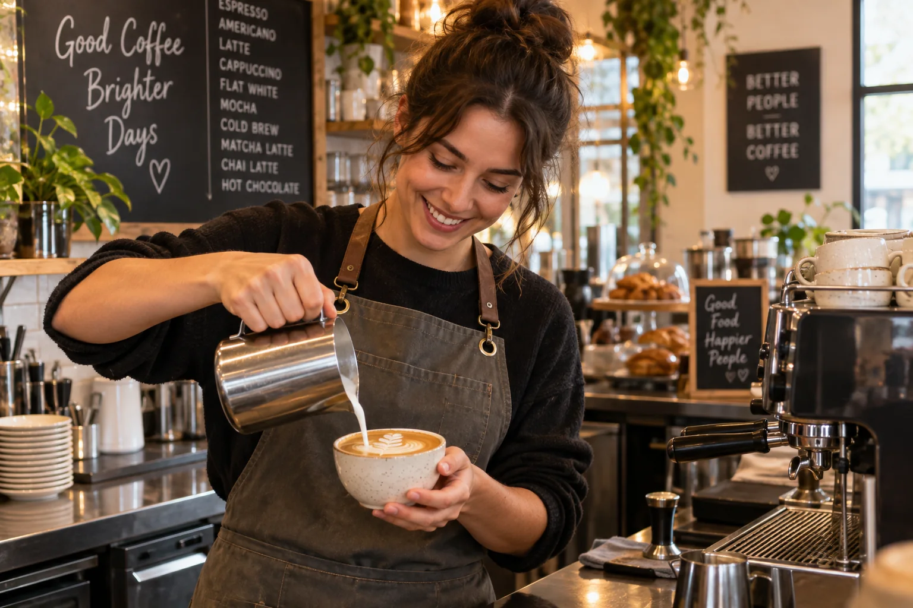
Prompt usado
happy barista making coffee

Prompt usado
Medium shot of Lia, a Brazilian barista in her early 30s with curly dark hair tied up, light-brown skin and freckles, wearing a mustard-yellow linen apron over a white t-shirt, slowly pouring hot water from a copper gooseneck kettle into a ceramic pour-over dripper, focused and calm. Shot on a 50mm lens at f/2, eye level. Soft morning window light from the left, warm 3500K, gentle shadow falloff on the right side of her face. Visible steam, matte glazed ceramic, worn wooden counter with coffee grounds, linen texture on the apron. Subject on the left third, negative space on the right with a softly blurred vintage coffee roaster and burlap sacks in the background. Natural documentary photography, subtle 35mm film grain, evoking quiet craftsmanship at dawn.
Duas gerações independentes. A da esquerda é competente, mas o modelo escolheu tudo: sorriso de banco de imagem, latte art, lousas em inglês, cafeteria de catálogo — nada ali pertence a uma marca específica. À direita, cada elemento — plano médio, 50 mm, janela à esquerda a 3500K, vapor, cerâmica fosca, avental mostarda, torrador ao fundo — foi pedido. Abra “Prompt usado” embaixo de cada uma e compare. O resto deste módulo desmonta a imagem da direita, camada por camada.
1Sujeito e ação: o esqueleto do quadro
O que é
O sujeito é quem ou o que ocupa o centro da atenção; a ação é o que ele faz naquele instante. Juntos são o esqueleto: todas as outras camadas (lente, luz, estilo) se penduram neles. Escreva como um romancista apresentaria o personagem na primeira página: idade aproximada, cabelo, pele, roupa, gesto, objeto na mão, lugar.
✓ Concreto e observável
- Lia, barista de 30 e poucos anos, cabelo cacheado preso, sardas, avental de linho mostarda
- despejando devagar água de uma chaleira de cobre num coador de cerâmica
- balcão de madeira gasto, torrador antigo ao fundo
✗ Abstrato ou emocional
- uma pessoa feliz
- fazendo café
- numa cafeteria bonita
Por que aprender
“Feliz” não é algo que a câmera veja; “sorriso leve, olhos semicerrados para o vapor” é. Quando você troca adjetivos de sentimento por sinais visíveis, o modelo tem o que desenhar. E quando o personagem está bem descrito, você consegue repeti-lo em outras cenas — base de qualquer campanha (módulo 2-2).
Conceitos-chave em ação
Um teste rápido: leia só a primeira frase do prompt. Se um ilustrador conseguiria esboçar a cena a partir dela, o esqueleto está bom. Uma ação física específica (“despejando água”, “ajustando o moedor”, “cheirando os grãos na palma da mão”) sempre rende mais do que uma pose (“posando”, “sorrindo para a câmera”).
2Tipo de plano: o que o espectador vê
O que é
A câmera no seu prompt é o olho de quem vê. O tipo de plano diz o quanto do sujeito e do ambiente entra no quadro. Os nomes vêm do cinema e os modelos os conhecem bem — em inglês, que é como vão no prompt:
| Plano (inglês no prompt) | O que mostra | O que comunica |
|---|---|---|
| Plano-detalhe (extreme close-up) | um olho, uma mão, um objeto | intimidade, atenção ao detalhe |
| Close (close-up) | rosto e ombros | emoção |
| Plano médio (medium shot) | da cintura para cima | equilíbrio entre pessoa e contexto |
| Plano inteiro (full shot) | corpo inteiro + entorno imediato | postura, figurino, ação completa |
| Plano geral (long / wide shot) | o ambiente todo, pessoa pequena | atmosfera, escala, lugar |
Por que aprender
Trocar só o plano muda a história que a mesma cena conta. O close fala da concentração de Lia; o plano geral fala da torrefação ao amanhecer. Veja a mesma imagem-base reenquadrada — só o plano mudou:
Conceitos-chave em ação
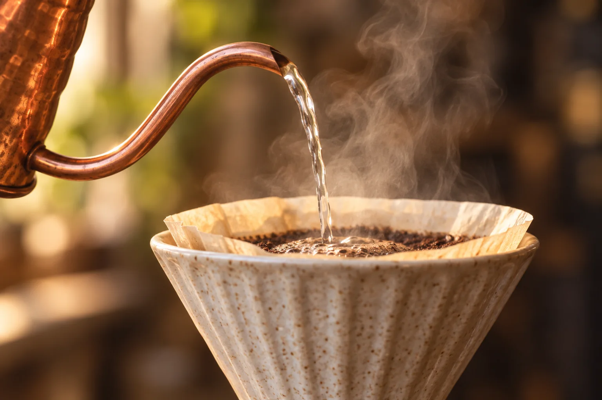
Instrução de edição usada (sobre a imagem-base)
Reframe this exact scene as an EXTREME CLOSE-UP (detail shot): only the copper kettle spout, the stream of hot water and the steam rising from the ceramic dripper fill the frame. Same warm window light from the left, same color grade, same materials.

Instrução de edição usada (sobre a imagem-base)
Reframe this exact scene as a CLOSE-UP: only Lia's face and shoulders fill the frame, her concentrated eyes looking down at the pour. Keep the same woman, same hair, freckles, apron, same warm window light from the left and same color grade. Background becomes an out-of-focus blur.
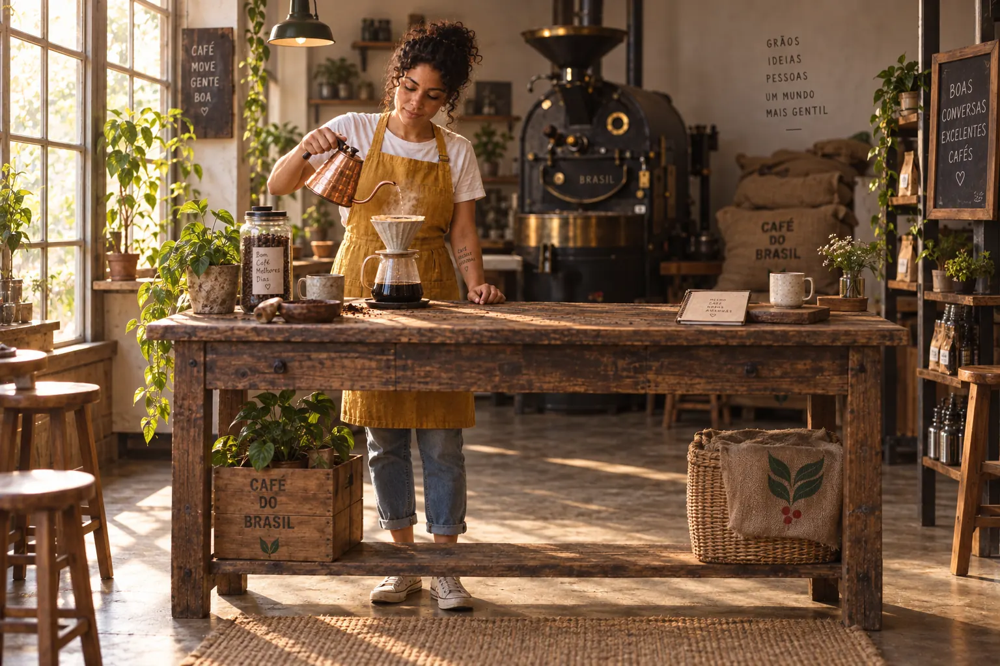
Instrução de edição usada (sobre a imagem-base)
Reframe this exact scene as a FULL SHOT: pull the camera back so Lia is visible head to toe standing behind the wooden counter, with the whole counter and some of the café floor visible. Keep the same woman, outfit, action, warm window light from the left and color grade.
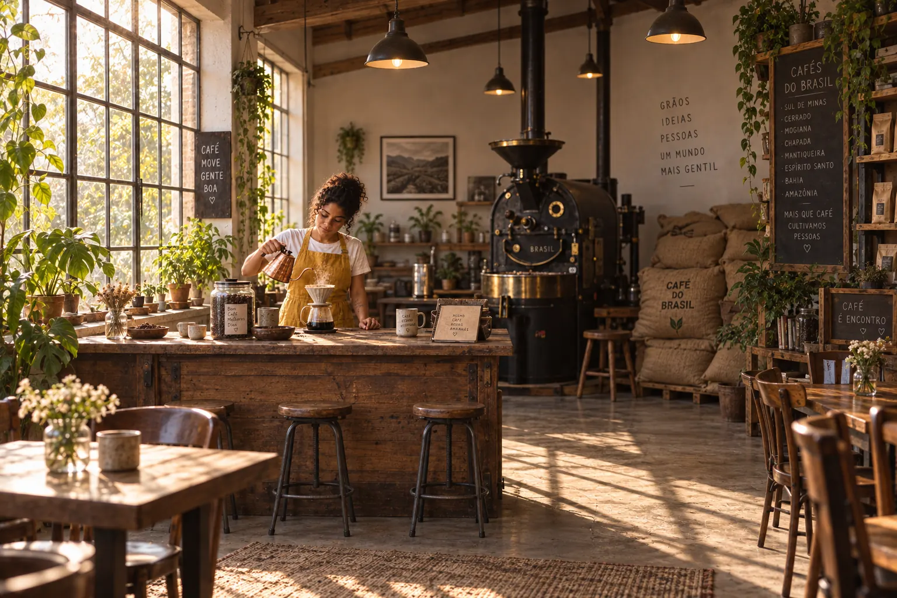
Instrução de edição usada (sobre a imagem-base)
Reframe this exact scene as a LONG SHOT (wide establishing shot): Lia is small in the frame, the entire rustic roastery café is visible — the big window, the vintage roaster, burlap coffee sacks, wooden tables — and the morning light fills the space. Keep the same woman, outfit and warm light direction.
Quatro edições da mesma imagem-base (o plano médio do topo do módulo). O plano-detalhe transforma o gesto em assunto; o close entrega emoção; o inteiro mostra o ofício; o geral vende o lugar. Pergunte-se sempre: qual destes o meu cliente precisa para esta peça?
3Ângulo de câmera: de onde se olha
O que é
Plano é o quanto; ângulo é o de onde. Os principais: altura dos olhos (eye level, neutro), ângulo baixo / contra-plongée (low angle, worm's-eye view), zenital (bird's-eye view, top-down), sobre o ombro (over-the-shoulder) e ponto de vista (POV, a câmera como os olhos do personagem).
Por que aprender
Um ângulo baixo dá autoridade e monumentalidade — ótimo para retrato de marca que quer transmitir confiança. O zenital achata a profundidade e transforma objetos em desenho gráfico — perfeito para flat lay de produto e redes sociais.
Conceitos-chave em ação
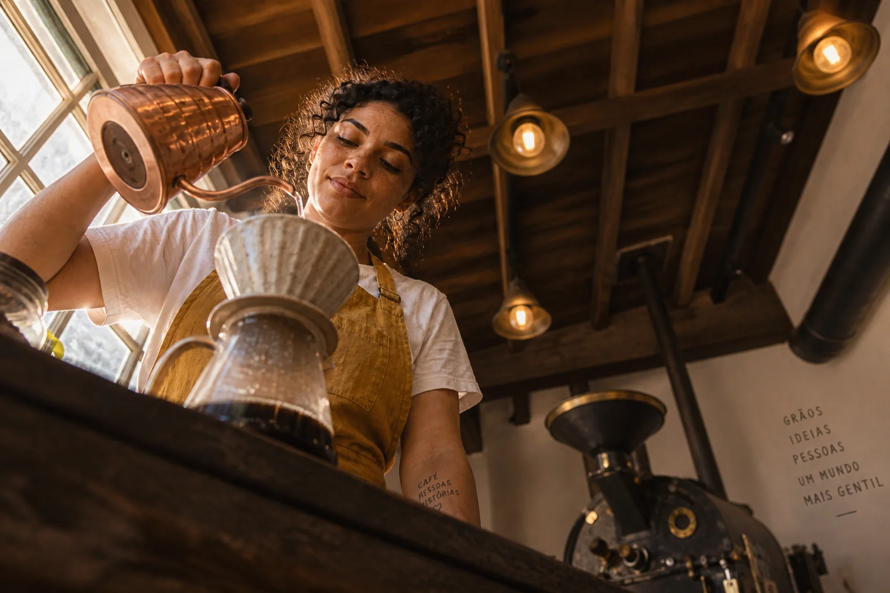
Instrução de edição usada (sobre a imagem-base)
Completely re-shoot this scene from a dramatic LOW ANGLE (worm's-eye view): the camera is placed below the counter edge, pointing steeply UP at Lia, so we see the underside of the kettle and her face from below, the wooden ceiling beams and hanging pendant lamps fill the top of the frame. Strong upward perspective. Keep the same woman, outfit, action, warm window light from the left and color grade.
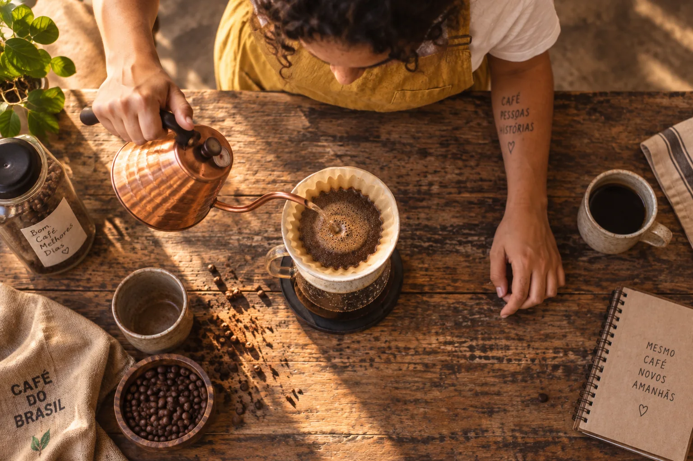
Instrução de edição usada (sobre a imagem-base)
Re-shoot this exact scene from a BIRD'S-EYE VIEW, straight down from above the counter: we see the top of the ceramic dripper, the kettle, Lia's hands and forearms, cups and coffee beans arranged on the wooden counter as a graphic composition. Same warm window light, same materials and color grade.
A mesma base, editada só no ângulo. Embaixo, Lia vira protagonista; de cima, o ritual do café vira padrão gráfico — mãos, chaleira e grãos organizados sobre a madeira. Note que o zenital praticamente elimina o rosto: escolha o ângulo pelo que a peça precisa mostrar.
✓ Use quando…
- low angle: retrato de liderança, produto “heroico”
- bird's-eye: mesa posta, flat lay, processo com as mãos
- over-the-shoulder: colocar o espectador dentro da conversa
✗ Cuidado com…
- ângulo baixo demais em rosto: queixo e narinas dominam
- zenital com pessoas em pé: vira topo de cabeça
- misturar dois ângulos no mesmo prompt (“low angle bird's-eye”)
4Lente e distância focal: a psicologia do espaço
O que é
Guia de lentes para o prompt
| Faixa | Nome | Efeito na imagem | Bom para |
|---|---|---|---|
| 14–24 mm | ultra-grande-angular | espaço exagerado, linhas esticadas nas bordas, dinamismo | interiores, arquitetura, ação dramática |
| 24–35 mm | grande-angular | bastante ambiente, sensação de estar lá | documental, lifestyle, rua |
| 35–50 mm | normal | perspectiva parecida com a do olho | cenas naturais, plano médio |
| 85–135 mm | retrato / tele curta | compressão lisonjeira, fundo desfocado, sujeito isolado | retratos, produto com fundo limpo |
| 200 mm + | teleobjetiva | compressão extrema, fundo “achatado” | esporte, natureza, gráfico urbano |
Por que aprender
Quem fotografa sabe: a lente não é “zoom”. Ela muda a perspectiva. Com uma grande-angular você chega perto e o fundo parece distante e amplo; com uma tele você se afasta e o fundo parece colado no sujeito. Mesmo com o sujeito do mesmo tamanho no quadro, a sensação muda completamente.
Conceitos-chave em ação
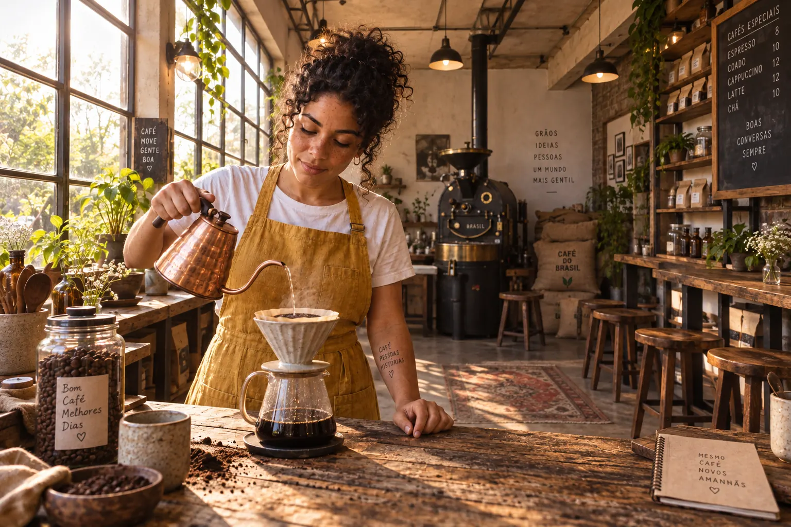
Instrução de edição usada (sobre a imagem-base)
Re-shoot this exact scene with a 24mm WIDE-ANGLE lens from closer to Lia, keeping her at roughly the same size in the frame: the background now shows much more of the café, lines of the counter and window stretch toward the edges, slight wide-angle perspective, deeper depth of field. Same woman, outfit, action, light and color grade.
Prompt usado
Medium shot of Lia, a Brazilian barista in her early 30s with curly dark hair tied up, light-brown skin and freckles, wearing a mustard-yellow linen apron over a white t-shirt, slowly pouring hot water from a copper gooseneck kettle into a ceramic pour-over dripper, focused and calm. Shot on a 50mm lens at f/2, eye level. Soft morning window light from the left, warm 3500K, gentle shadow falloff on the right side of her face. Visible steam, matte glazed ceramic, worn wooden counter with coffee grounds, linen texture on the apron. Subject on the left third, negative space on the right with a softly blurred vintage coffee roaster and burlap sacks in the background. Natural documentary photography, subtle 35mm film grain, evoking quiet craftsmanship at dawn.
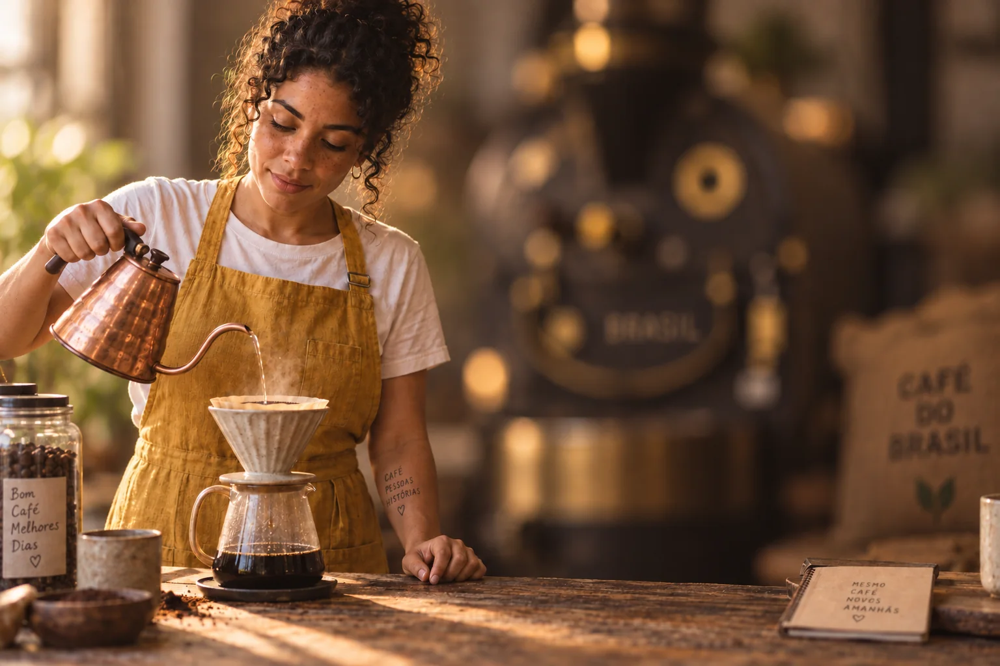
Instrução de edição usada (sobre a imagem-base)
Re-shoot this exact scene with a 135mm TELEPHOTO lens from farther away, keeping Lia at roughly the same size in the frame: the background is compressed and much closer-looking, only a small slice of it visible, turned into creamy bokeh, very shallow depth of field. Same woman, outfit, action, light and color grade.
Lia tem quase o mesmo tamanho nas três. Com 24 mm aparece a torrefação inteira e as linhas do balcão escapam para as bordas — energia, contexto. Com 50 mm, a visão natural. Com 135 mm o fundo vira uma mancha cremosa e “encosta” nela — foco total na pessoa. As duas laterais são edições da base pedindo a troca de lente.
5Luz: fonte, direção, qualidade e temperatura
O que é
Os modelos respondem muito bem a descrições específicas de luz. Pense nas quatro características, sempre nesta ordem:
| Característica | Pergunta | Vocabulário para o prompt |
|---|---|---|
| Fonte | o que emite a luz? | window light, overcast daylight, softbox, neon sign, candlelight, practical lamp |
| Direção | de onde ela vem? | front-lit, side-lit (Rembrandt), backlit, rim light, top light |
| Qualidade | a sombra tem borda? | hard light (sombra recortada) · soft/diffused light (sombra gradual) |
| Temperatura | qual a cor? | 2700–3500K quente · 5000–5600K neutro/dia · 6500–7500K frio |
Por que aprender
“Iluminação cinematográfica” não diz nada: cinematográfica como? A mesma pessoa, no mesmo lugar, conta histórias opostas dependendo da luz. Compare com a imagem-base (janela suave à esquerda, 3500K):
Conceitos-chave em ação
Prompt usado
Medium shot of Lia, a Brazilian barista in her early 30s with curly dark hair tied up, light-brown skin and freckles, wearing a mustard-yellow linen apron over a white t-shirt, slowly pouring hot water from a copper gooseneck kettle into a ceramic pour-over dripper, focused and calm. Shot on a 50mm lens at f/2, eye level. Soft morning window light from the left, warm 3500K, gentle shadow falloff on the right side of her face. Visible steam, matte glazed ceramic, worn wooden counter with coffee grounds, linen texture on the apron. Subject on the left third, negative space on the right with a softly blurred vintage coffee roaster and burlap sacks in the background. Natural documentary photography, subtle 35mm film grain, evoking quiet craftsmanship at dawn.
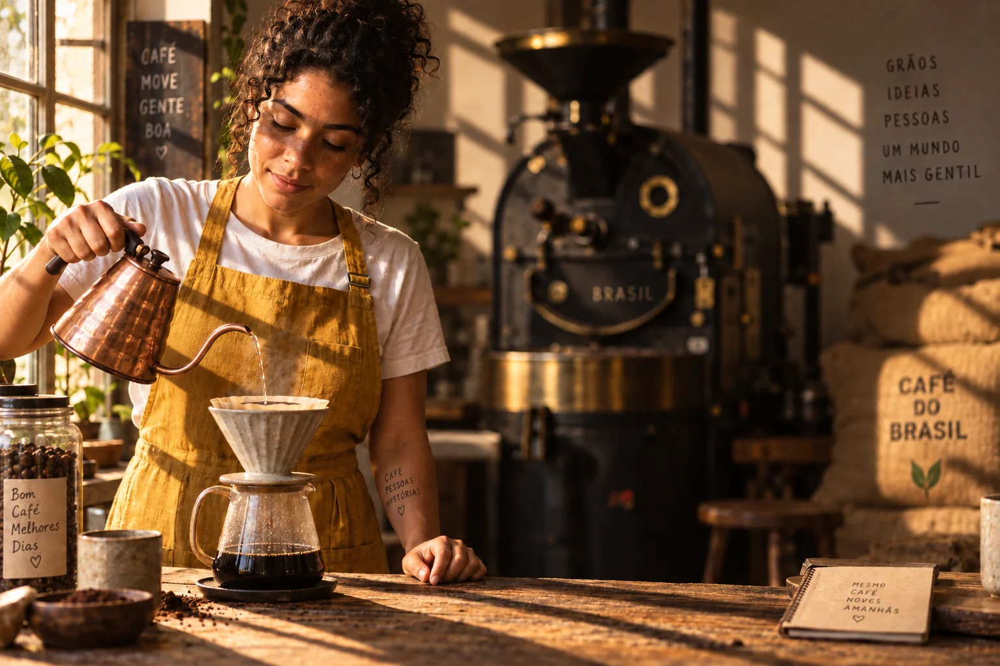
Instrução de edição usada (sobre a imagem-base)
Change ONLY the lighting: hard direct late-afternoon sun coming through the window from the left, crisp high-contrast shadows with sharp edges across her face and the counter, window-frame shadow pattern on the wall. Keep the same woman, pose, framing, lens, background and objects identical.

Instrução de edição usada (sobre a imagem-base)
Change ONLY the lighting: strong BACKLIGHT from a window behind Lia, a golden rim light outlining her hair, shoulders and the rising steam, her face in soft shadow with gentle fill. Keep the same woman, pose, framing, lens, background and objects identical.
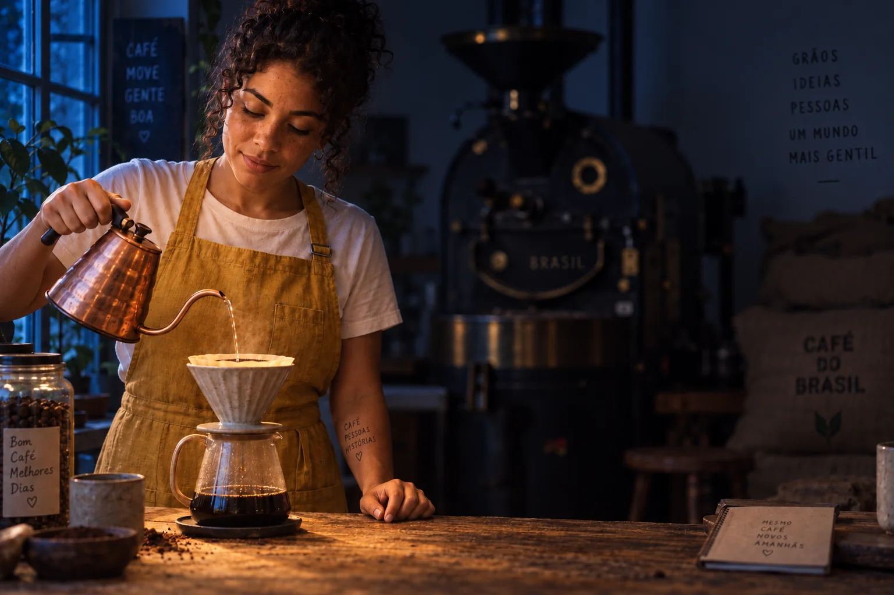
Instrução de edição usada (sobre a imagem-base)
Change ONLY the lighting to night: the room is dark, a cool blue 7000K light spills from the window on the left and a small warm 2700K pendant lamp above the counter lights her hands and the dripper. Mixed cool and warm color temperatures. Keep the same woman, pose, framing, lens, background and objects identical.
Só a luz foi editada. A suave é acolhedora e artesanal; a dura cria drama e desenha a janela na parede; o contraluz transforma o vapor em protagonista e separa Lia do fundo; a mistura noturna de frio e quente dá clima de bar/cinema. Uma frase de luz troca o gênero da foto.
✓ Técnico
- soft window light from the left, warm 3500K
- hard backlight, golden rim light on hair
- cool 7000K moonlight + warm 2700K practical lamp
✗ Vago
- cinematic lighting
- beautiful light
- moody lighting
6Textura e material: fuja do “plástico de IA”
O que é
Textura é o padrão de pequenas variações de uma superfície; material é aquilo de que ela parece feita. Se você não diz, o modelo escolhe por você — acabamentos “de catálogo”, limpos e uniformes, que não contam nada sobre o produto.
Biblioteca inicial de texturas
| Material | Palavras que funcionam |
|---|---|
| Metal | brushed, polished, matte, scratched, patina, hammered copper |
| Tecido | linen with slubs, raw denim, wool knit, crumpled cotton, worn leather |
| Pele | visible pores, fine lines, freckles, natural tone variation, no retouching |
| Cerâmica/vidro | speckled matte glaze, drip line, crackle glaze, frosted glass, fingerprints |
| Papel/madeira | kraft paper fibers, embossed, oak grain, scratched, sanded, weathered |
Por que aprender
Material é o que faz a imagem parecer tocável — e é o que dá identidade a uma foto de produto. Veja o mesmo assunto (xícara + pacote de café) pedido de duas formas. Aqui são duas gerações independentes, porque o ponto é justamente o que o prompt diz:
Conceitos-chave em ação
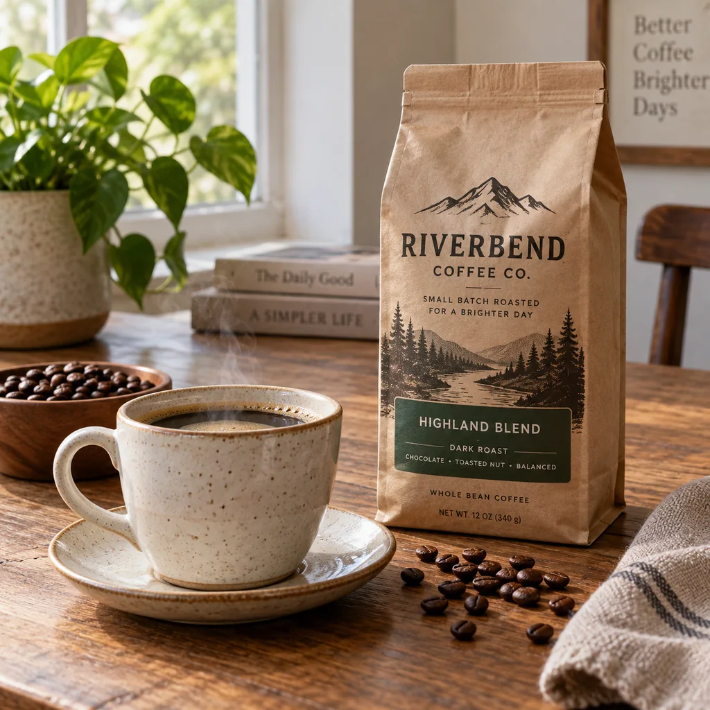
Prompt usado
a cup of coffee and a bag of coffee on a table
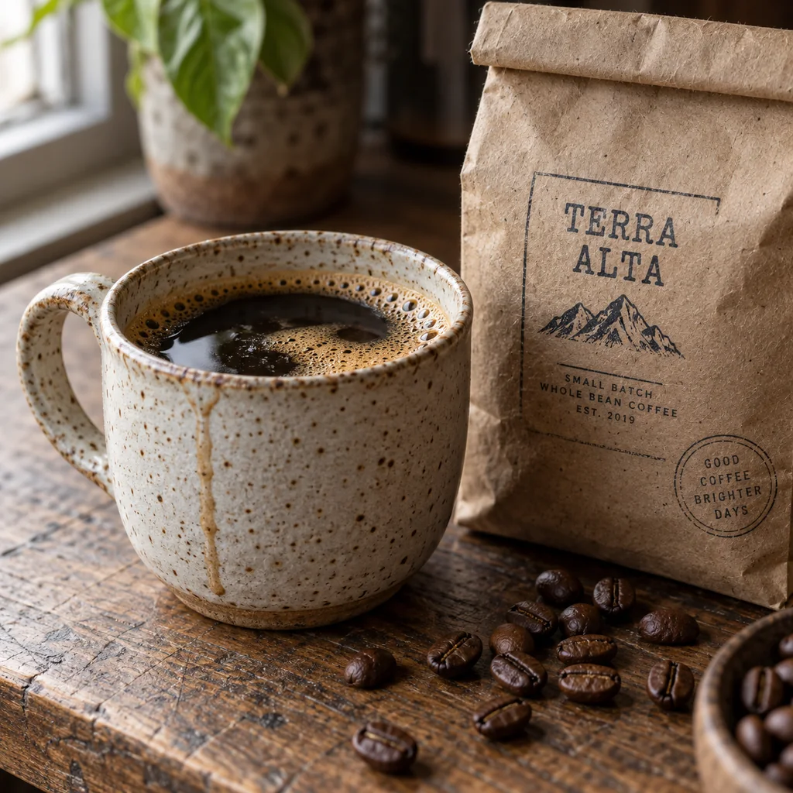
Prompt usado
Close-up product photo of a hand-thrown stoneware coffee cup with a speckled matte cream glaze and a visible drip line, filled with black coffee with a thin golden crema and tiny bubbles, next to a kraft-paper coffee bag with a folded top, rough recycled paper fibers and a hand-stamped ink label reading 'TERRA ALTA', on a scratched oak table with a few scattered roasted beans showing their center crease and oily sheen. Soft side window light from the left, 4000K. 90mm macro look, f/4.
À esquerda, com um prompt de nove palavras, o modelo inventou tudo: xícara branca lisa de catálogo, um pacote com uma marca que não existe (“Riverbend”), paisagem de pinheiros. Bonito e totalmente genérico. À direita: esmalte salpicado com escorrido, crema com bolhas, fibras do kraft, carimbo TERRA ALTA, grãos com brilho de óleo, carvalho riscado. Nenhum desses detalhes veio “de graça” — todos estão no prompt.
7Composição: conduza o olhar
O que é
As ferramentas principais: centralizado/simétrico (formal, estável), regra dos terços (dinâmico, natural), espaço negativo (área vazia que dá respiro — e lugar para título), linhas guia (leading lines: bordas, estradas, prateleiras que levam o olho ao assunto) e camadas (foreground, midground, background) que criam profundidade.
Por que aprender
Numa peça de marca, a composição é decidida antes de gerar: se vai ter título, o espaço para ele precisa existir na foto. Colar o texto depois em cima do produto é o erro mais comum de iniciante.
Conceitos-chave em ação
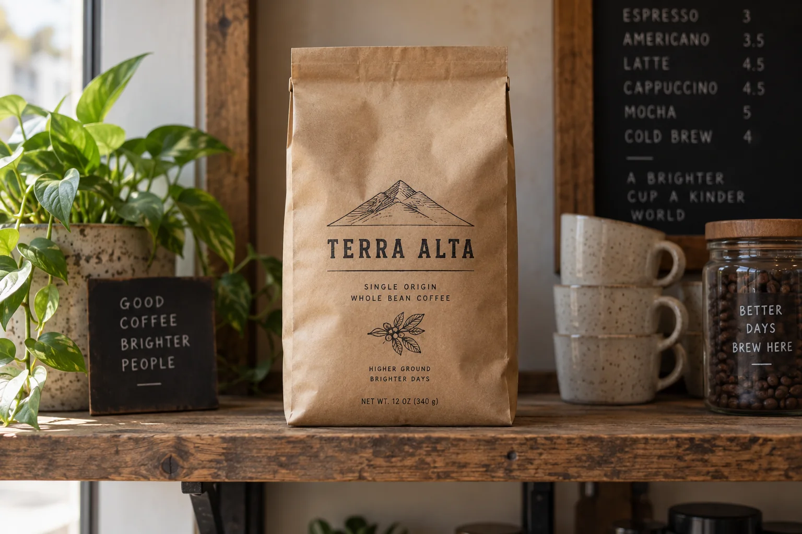
Prompt usado
Product photograph of a kraft-paper coffee bag with a hand-stamped label reading 'TERRA ALTA' standing on a rustic wooden shelf in a café, perfectly centered and symmetrical in the frame, soft window light from the left, 4000K, 50mm lens, realistic paper texture.
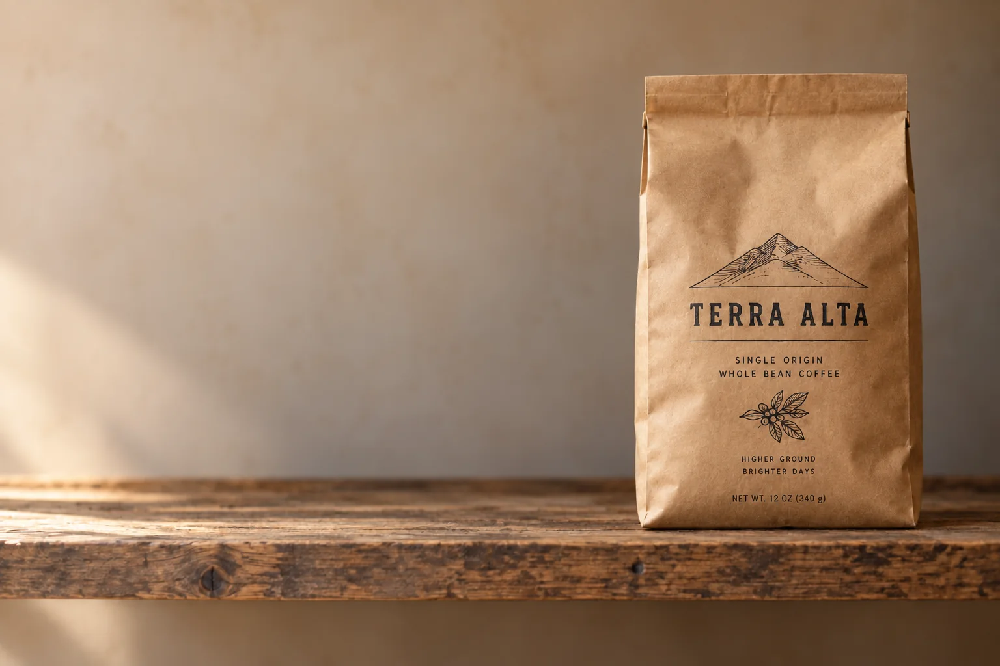
Instrução de edição usada (sobre a imagem-base)
Recompose this exact product shot: move the coffee bag to the RIGHT THIRD of the frame and leave clean negative space of soft blurred wall on the left two-thirds (space for a headline). Keep the same bag, label, shelf, light and color grade.
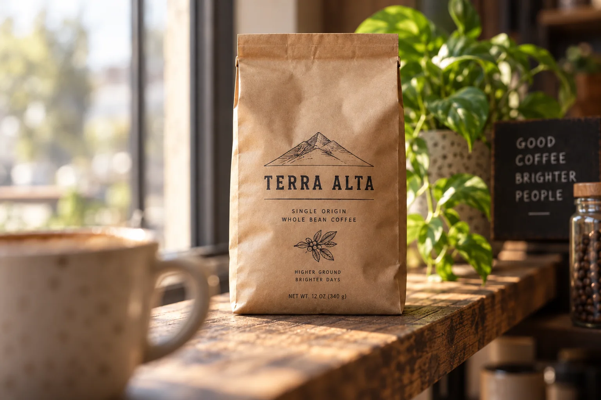
Instrução de edição usada (sobre a imagem-base)
Recompose this exact product shot with DEPTH LAYERS and a LEADING LINE: an out-of-focus ceramic cup in the near foreground on the left, the coffee bag sharp in the midground, and the edge of the wooden shelf running diagonally from the bottom-left corner toward the bag, with a soft blurred window in the background. Keep the same bag, label, light and color grade.
O mesmo pacote, a mesma luz — só a composição foi editada. O centro é estável, bom para catálogo. O terço direito libera a esquerda para uma manchete de anúncio. As camadas (xícara desfocada na frente, prateleira em diagonal) criam profundidade e levam o olho direto ao rótulo.
Frases de composição para colar
Objetivo: Ter à mão as instruções que o modelo entende bem.
subject placed on the right third, clean negative space on the left for a headline perfectly centered, symmetrical composition out-of-focus foreground element on the left, subject sharp in the midground, soft background leading line running diagonally from the bottom-left corner to the subject low horizon, sky filling the top two-thirds
Como verificar: Gere a mesma cena trocando só a frase de composição e confira se o assunto foi para onde você pediu.
8Estilo, referência e os 3 pilares
O que é
Referências de estilo colocam a imagem dentro de um universo que o modelo reconhece: uma época (anos 70, anos 90), um tipo de fotografia (editorial de moda, documental, publicidade de revista), um suporte (filme 35 mm, Polaroid, Kodachrome), um meio (animação 3D, aquarela). Descreva a estética em vez de citar nomes de fotógrafos ou artistas vivos — além da questão ética, a descrição é mais controlável.
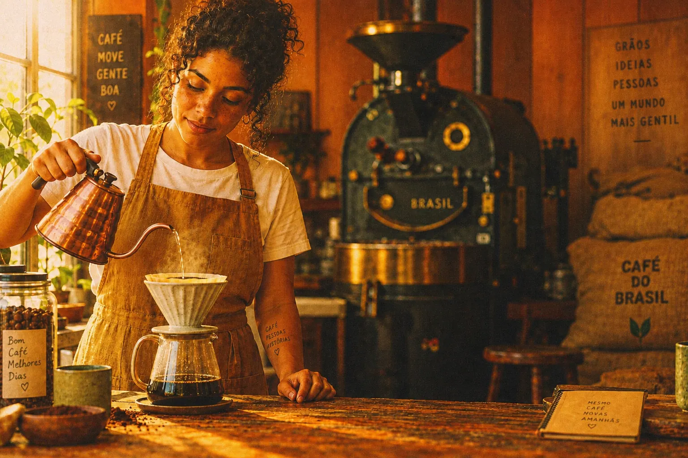
Instrução de edição usada (sobre a imagem-base)
Fully re-render this entire image as an authentic 1970s printed magazine advertisement photograph: strong Kodachrome color shift toward saturated oranges, browns and olive greens, lifted faded blacks, soft halation glow around the window, heavy visible film grain, slightly soft focus, warm vintage color cast over everything, period 1970s wood-paneled café. The look must be unmistakably 1970s, clearly different from a modern photo. Keep the same woman, pose, framing and action.
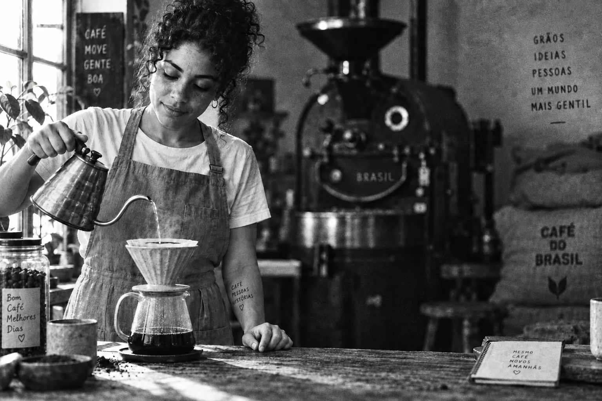
Instrução de edição usada (sobre a imagem-base)
Restyle this exact scene as gritty 1990s black-and-white documentary photography: high-contrast monochrome, pushed-film coarse grain, deep blacks, slightly blown window highlights, raw and unpolished. Keep the same woman, pose, framing and action.
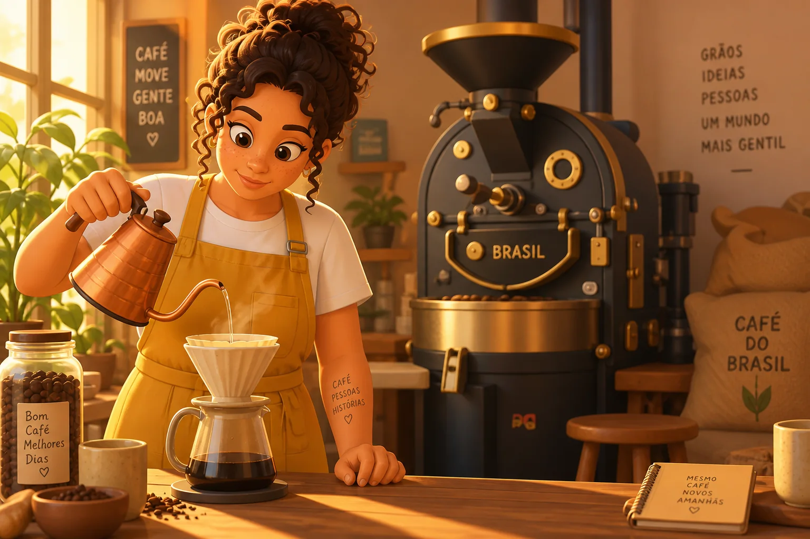
Instrução de edição usada (sobre a imagem-base)
Fully re-render this ENTIRE image — character AND background — as a stylized 3D animated feature film still: Pixar-like toon shading, simplified rounded shapes, slightly exaggerated proportions (bigger eyes, smooth stylized hair clumps), clean plastic-free subsurface skin, stylized props and roaster, warm pastel palette, soft global illumination. Nothing should look photographic. Keep the same composition, light direction and character design (curly dark hair tied up, freckles, mustard apron), pose and action.
Mesma base, mesmo enquadramento, três universos. Repare que o estilo muda cor, grão, contraste e até o grau de realismo — mas a direção (plano, luz vinda da esquerda, composição) continua lá. Estilo é a última camada, não um atalho para pular as outras.
Por que aprender
Um prompt forte se apoia em três pilares:
| Pilar | O que é | No prompt da Lia |
|---|---|---|
| Estrutura | a base técnica: plano, lente, luz, materiais, composição | medium shot, 50mm f/2, soft window light from the left 3500K, matte ceramic, left third |
| Referência | âncoras visuais: época, gênero, suporte | natural documentary photography, subtle 35mm film grain |
| Visão | a intenção emocional: o que o espectador deve sentir | evoking quiet craftsmanship at dawn |
Use linguagem técnica, não emoções vagas: em vez de “retrato melancólico”, escreva “retrato 85 mm, f/1.4, luz lateral suave, tons quentes 3200K”. A emoção entra no fim, como destino — não como instrução.
Conceitos-chave em ação
Prompt em JSON. Modelos recentes (Nano Banana Pro, GPT Image, Veo, Kling, Sora) entendem instruções estruturadas em blocos rotulados. Isso ajuda quando você precisa de variações dentro do mesmo sistema visual: troca um campo, mantém o resto. O Midjourney não usa JSON — lá, só texto corrido.
A imagem-base da Lia, escrita como JSON
{
"subject": {
"who": "Lia, Brazilian barista, early 30s, curly dark hair tied up, light-brown skin, freckles",
"wardrobe": "mustard-yellow linen apron over a white t-shirt",
"action": "slowly pouring hot water from a copper gooseneck kettle into a ceramic pour-over dripper",
"expression": "focused and calm"
},
"camera": { "shot": "medium shot", "angle": "eye level", "lens": "50mm", "aperture": "f/2" },
"lighting": { "source": "morning window", "direction": "from the left", "quality": "soft", "temperature": "3500K" },
"materials": ["visible steam", "matte glazed ceramic", "worn wooden counter with coffee grounds", "linen apron texture"],
"composition": { "placement": "left third", "negative_space": "right", "background": "blurred vintage coffee roaster and burlap sacks" },
"style": "natural documentary photography, subtle 35mm film grain",
"mood": "quiet craftsmanship at dawn"
}
Prática guiada: o prompt-mestre e duas variações
Você vai fazer exatamente o que fizemos com a Lia, agora para o seu cliente (ou para a Terra Alta, se ainda não escolheu). O objetivo é sair com um prompt-mestre e duas variações controladas — e saber explicar o que mudou.
Roteiro
- Escreva o sujeito e a ação em uma frase que um ilustrador conseguiria desenhar.
- Complete as seis camadas usando as tabelas deste módulo. Uma escolha por camada.
- Feche com a emoção pretendida (“evoking…”).
- Gere a versão 1 com o prompt “como está”. Salve a imagem e o prompt.
- Variação A: troque só o plano ou a lente. Variação B: troque só a luz ou a composição.
- Coloque as três lado a lado e anote o que mudou (ciclo de comparação, abaixo).
Molde do prompt-mestre
Objetivo: Montar um prompt com todas as camadas, trocando só o que está entre < >.
<Plano> of <sujeito: quem, aparência, roupa> <ação física concreta>, in <lugar com 2-3 objetos>. Shot on a <lente> lens at <abertura>, <ângulo>. <Fonte de luz> from the <direção>, <qualidade> light, <temperatura>K. Detailed textures: <material 1 + 2 adjetivos>, <material 2 + 2 adjetivos>. <Composição: posição do sujeito, espaço negativo, camadas>. <Referência de estilo: época, gênero, suporte>, evoking <emoção pretendida>.
Como verificar: Cada linha do molde virou algo visível na imagem? Se uma camada não aparece (ex.: a luz veio da direita), reforce só essa linha e gere de novo.
Exemplo pronto (Terra Alta — produto)
Objetivo: Testar o molde já preenchido para um produto, antes de escrever o seu.
Medium close-up of a kraft-paper coffee bag with a hand-stamped label reading 'TERRA ALTA' standing on a worn oak counter next to a speckled cream stoneware cup of black coffee, a few roasted beans scattered in front. Shot on an 85mm lens at f/2.8, slightly above eye level. Soft morning window light from the left, diffused, 4000K, gentle shadow to the right. Detailed textures: rough recycled kraft fibers, matte speckled glaze with a drip line, oily roasted beans with a center crease. Bag on the right third, clean negative space on the left for a headline, blurred café shelves in the background. Contemporary editorial product photography, natural color grade, evoking slow mornings in the mountains.
Como verificar: O rótulo saiu legível? O espaço à esquerda está limpo o bastante para um título? A luz vem da esquerda (sombra à direita)?
Ciclo de comparação (use em toda geração daqui para frente)
- Gere a partir de um prompt salvo.
- Compare com a referência ou com a versão anterior, lado a lado.
- Nomeie a diferença com vocabulário técnico (“a sombra ficou dura”, “a lente comprimiu demais”).
- Refine uma camada só.
- Salve o prompt vencedor na sua biblioteca, com a imagem.
Lição de casa
Escolha um cliente (real, sua marca ou fictício, mas próximo do nicho em que você quer trabalhar). Ele vai te acompanhar no curso inteiro. Escreva um briefing de 5–7 frases: quem é, o que faz, para quem, qual a “vibe” visual, em que plataformas as imagens serão usadas.
Nível básico (obrigatório)
- Traduza o briefing em linguagem visual: 3–5 adjetivos de estilo, 2–3 referências de estética descritas (sem nomes de artistas), 1 uso principal (capa de Reels, banner do site, anúncio…).
- Escreva um prompt-mestre para a imagem-herói da marca, com as seis camadas e a emoção, em texto corrido (não em tópicos).
- Gere 3 imagens: o mestre, a Variação A (plano ou lente) e a Variação B (luz ou composição). Salve cada prompt exato.
- Faça o ciclo de comparação por escrito (máx. 10 frases): o que mudou no prompt, o que mudou na imagem, quais palavras tiveram mais efeito.
- Escreva a versão JSON do seu prompt-mestre.
Nível avançado (desafio)
- Grade lente × luz: mesmo sujeito e ação, 4 versões: 35 mm + luz de dia lateral suave · 85 mm + tungstênio quente em Rembrandt · 24 mm + neon duro · 50 mm + contraluz com recorte. Escreva 8–10 frases sobre como cada combinação muda clima, foco e “orçamento aparente” da foto.
- Sistema de prompts da marca: um documento de 1 página com a descrição da marca, o prompt-mestre e 3 moldes com [variáveis] (retrato, produto, cena de atmosfera) que você poderia entregar a um cliente.
Entregue/guarde: Pasta do projeto com briefing, as 3 imagens + prompts, a análise e o JSON. Ela será reaproveitada nos módulos seguintes.
Teste sua decisão
1. Você quer que o fundo da foto de retrato vire um borrão e “encoste” na pessoa, isolando-a. O que acrescenta ao prompt?
Consultar a explicação
Lentes longas (85–135 mm) comprimem o fundo e, com abertura grande (f/1.4–f/2.8), desfocam. 24 mm a f/11 faz o contrário: muito espaço e tudo nítido. Palavras genéricas como “cinematic” não dizem ao modelo o que fazer.
2. A imagem ficou com sombras recortadas e dramáticas, mas o cliente queria algo acolhedor. Qual é a única camada a mexer?
Consultar a explicação
A borda da sombra é controlada pela qualidade da luz. Trocar só essa camada mantém tudo que já funcionava — é o princípio do ciclo de comparação: uma variável por vez.
3. Numa peça de anúncio vai entrar um título grande do lado esquerdo. Quando você decide isso?
Consultar a explicação
Composição é decidida antes: se o espaço para o texto não existir na foto, o título vai cobrir o produto ou exigir um corte que estraga o enquadramento.
Responder não marca a leitura nem bloqueia o próximo módulo.
O que levar desta aula
- Prompt profissional = sujeito + ação + seis camadas: plano, lente, luz, textura, composição, estilo — e a emoção no fim.
- Três pilares: Estrutura (técnica), Referência (universo visual), Visão (o que o espectador sente).
- Linguagem técnica vence adjetivo vago: “85 mm, f/1.4, luz lateral suave, 3200K” em vez de “retrato moody”.
- Luz tem quatro controles: fonte, direção, qualidade e temperatura (K).
- Mude uma camada por vez e salve o prompt vencedor — o ciclo de comparação é como se treina o olho.
- JSON serve para variar dentro do mesmo sistema visual; o Midjourney só aceita texto.